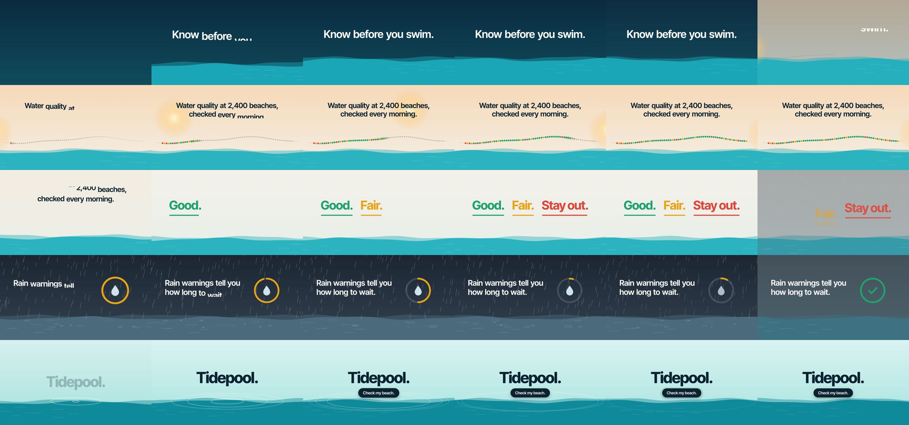

vibe-motion/skills: test run, 2026-10-11
The same brief for every skill: a 15-second promo for a made-up app, five fixed lines of on-screen copy, 1920 x 1080 at 30 frames per second. Claude Code (Claude Opus 5.5) made it with the skill in a throwaway sandbox with no API keys for video, image or voice models. 4.4 minutes; sound: yes. All results · The brief · How it is checked
The four checks
| Renders to a playable file | pass | H.264 |
|---|---|---|
| Length, size and frame rate as asked | pass | 15.06 s, 1920x1080, 30.0 fps |
| All five lines readable | pass | 5 of 5 |
| The picture moves | pass | 7% of sampled frame pairs held still |
Frames sampled twice a second

How it was made (the session's closing message)
I rendered the Tidepool promo with the `brand-launch-video-star` skill. It's at `~/work/output/video.mp4`, and the project it was rendered from is in `~/work/project`. **The file:** H.264, 1920×1080, 30fps, 450 frames, 15.06 seconds. It decodes cleanly from start to end. Remotion added a silent audio track; there's no voice-over or music. I checked stills from every shot and frames at the transitions. **What's on screen:** the five lines of copy, word for word and in order. Everything is drawn in code: a waterline runs through the whole film and the colours change with each shot. | Seconds | Copy | Visual | |---|---|---| | 0–2.6 | Know before you swim. | Water rises at dawn | | 2.4–6.2 | Water quality at 2,400 beaches, checked every morning. | A sun moves across a row of beach dots, and each dot lights up green, amber or red as it passes | | 6–8.8 | Good. Fair. Stay out. | The three words land one after another in green, amber and red, each with an underline | | 8.6–12 | Rain warnings tell you how long to wait. | Rain falls while a ring empties, then the ring turns green and shows a check mark | | 11.8–15 | Tidepool. Check my beach. | Ripples spread out, and a "Check my beach." button appears and gets pressed | Each line stays fully on screen for about 1.8 to 3 seconds. **Choices and workarounds:** - **No logo.** The skill normally requires an official logo, but the brief forbids logos and Tidepool has none here. "Tidepool." is just a line of copy in the same font as the rest. The skill's asset list records your brief as the only source, and its asset and timeline checks both pass. - **Font.** I added the free Inter Tight font package and deleted the sample logo file that came with the project template. - **Rendering.** The skill's install script failed to set up the browser used for rendering, because on this ARM machine the downloaded browser file has a different name. I rendered with the Remotion command directly and pointed it at that browser instead. To render again, run this from inside `~/work/project`: `npx remotion render TidepoolPromo out.mp4 --codec=h264 --browser-executable=node_modules/.remotion/chrome-headless-shell/linux-arm64/chrome-headless-shell-linux-arm64/headless_shell` The scene code is in `project/motion/Scene.jsx`, and the shot timings and copy are in `project/motion/shots.js`. The skill's asset list and timeline are in `project/plan/`. DELIVERABLE: ~/work/output/video.mp4